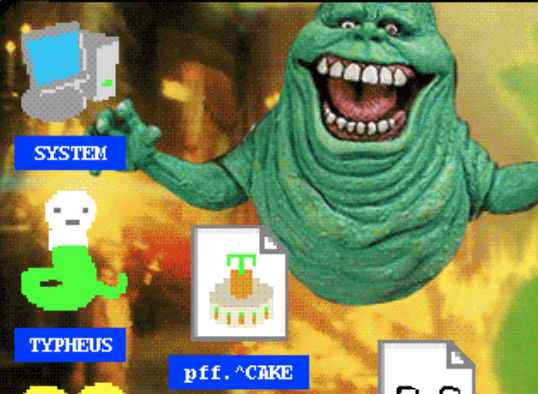

Check Piss Chat

-- bootlegRequiem [BR] began pestering the group chat [Piss Chat] at 11:02 --
[BR]: Me, Eri and Aegis are here at the HQ. Where have you been?
-- freshStart [FS] began pestering the group chat [Piss Chat] at 11:05 --
[FS]: We just left the house will be there in a bit.
[BR]: Okay hurry up we are waiting.
-- freshStart [FS] ceased pestering the group chat [Piss Chat] at 11:05 --
-- bootlegRequiem [BR] ceased pestering the group chat [Piss Chat] at 11:05 --
Piss chat is one of many groupchats that exist in the friend group that have spesific people in and out. These groupchats sometimes have practical uses meanwhile others are made just because.
> Head to HQGo Back